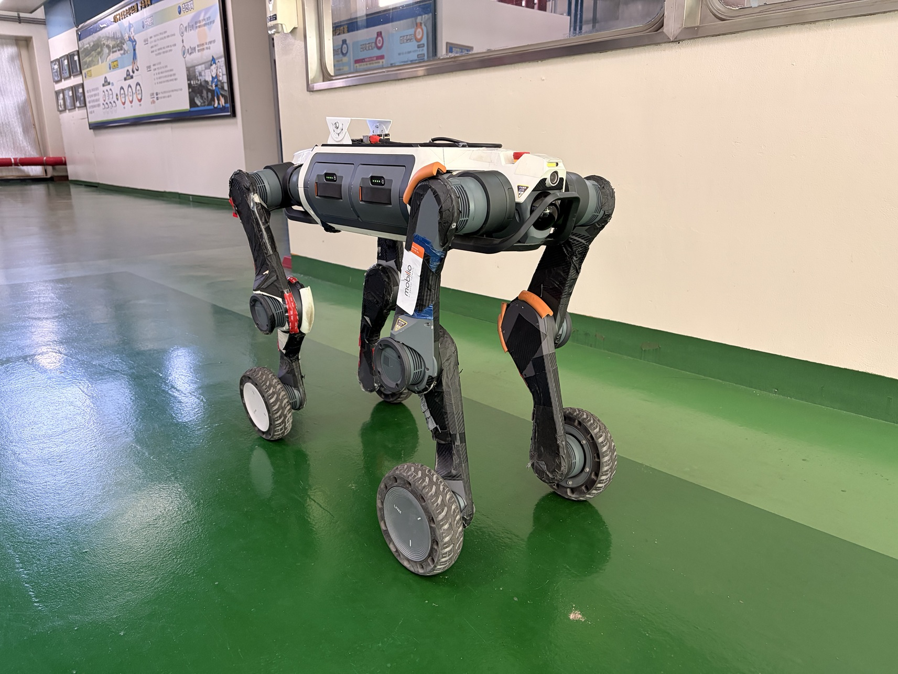

피지컬 AI
사족보행 로봇 점검 대시보드 구축
바퀴형 사족보행 로봇(M20 Pro)으로 시설물 순찰을 시험하고, 로봇이 작성한 공간 지도(노드·엣지·경로)와 열화상·일반 카메라 영상, 가스 센서 데이터를 실시간으로 확인하며 순찰 미션을 내리는 로봇 운영 서버(관제 대시보드)를 구축했습니다.


- 순찰 테스트
- 로봇 도입 업체가 자체 운영 프로그램으로 바퀴형 사족보행 로봇의 시설물 순찰 주행과 운용성을 시험했습니다.
- 공간 지도와 순찰 경로(노드·엣지)
- 로봇이 주행하며 만든 공간 지도 위에 순찰 경로(노드·엣지)와 점검 지점을 표시하고 평면도와 정합해 관리합니다. 지도는 이름을 붙여 저장하고 다시 불러올 수 있습니다.
- 미션 기반 순찰 운영
- 로봇 연결, 미션 선택, 실행·주행 취소를 대시보드에서 바로 제어합니다. 연결 상태, 현재 임무, 위치, 배터리, 화면 이벤트를 상단에서 한눈에 확인합니다.

- 열화상·일반 카메라 실시간 영상
- 열화상 카메라는 최고·최저·평균 온도와 임계치(Threshold)를 함께 표시해 과열 지점을 찾는 데 활용합니다. 일반 카메라 영상에는 AI 감지 결과를 겹쳐 확인할 수 있습니다.
- 로봇 탑재 가스 센서(4종)
- 로봇에 연결한 가스 센서(ZCE04B)로 메탄(CH₄), 일산화탄소(CO), 황화수소(H₂S), 산소(O₂) 농도를 순찰 중에 실시간으로 측정합니다.
- 점검 서버와 연동
- 운영 서버가 수집한 영상과 센서 데이터는 사족보행 시설물 점검 대시보드로 연동되어 로컬 AI 점검 판정과 이력 기록에 쓰입니다.
- 현장 적용 계획
- 업체의 로봇 운영 프로그램과 자체 운영 서버 연동을 마무리한 뒤 실제 공원 시설물 정기 순찰·점검에 투입할 예정입니다.